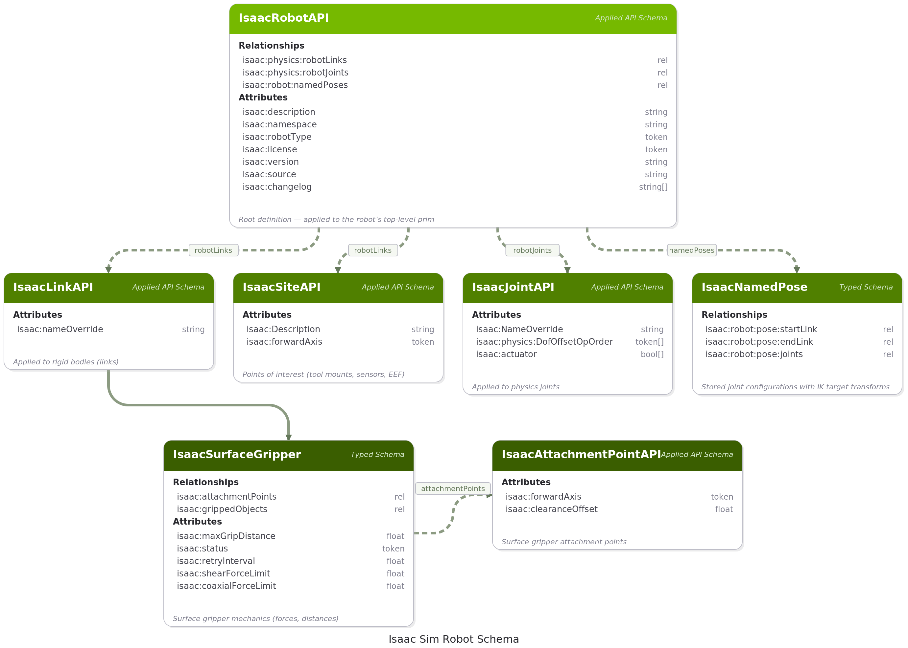
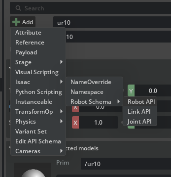
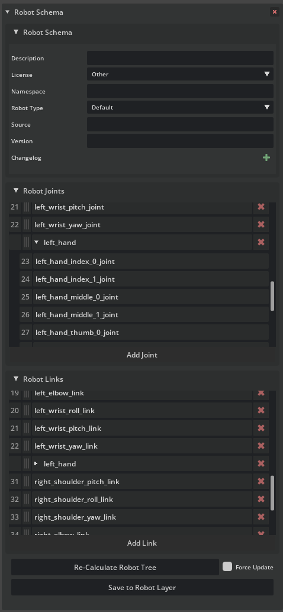
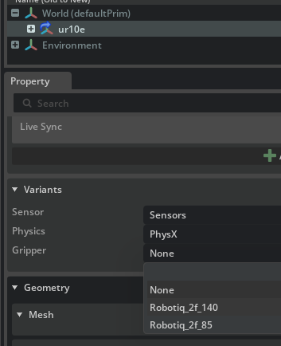
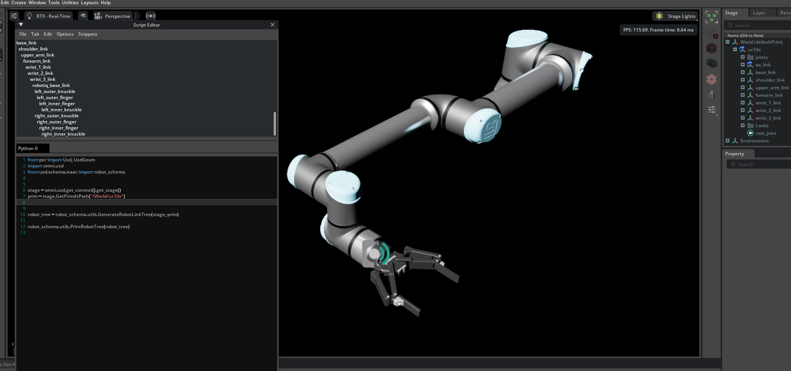

机器人 Schema#
机器人 Schema 通过一组应用 API Schema 扩展了 OpenUSD，以标准化、可组合的方式描述机器人结构。它基于 USD Common 定义和用于定义运动学树的 Physics Schema，为 Isaac Sim 中的机器人提供了规范表示。
该 Schema 通过两个扩展实现：
isaacsim.robot.schema– Schema 定义、应用辅助工具以及用于遍历和维护机器人结构的编程实用程序。isaacsim.robot.schema.ui– 交互式 Robot Inspector Window，用于在多种显示模式下查看机器人运动学树，选择性地屏蔽和绕过组件，将连杆锚定到世界，并在视口中可视化关节连接。
Schema 概述#
机器人 Schema 定义了五个应用 API Schema 和两个类型化 Schema：
Schema |
用途 |
|---|---|
IsaacRobotAPI |
应用于机器人顶层 Prim 的根定义。包含元数据以及连杆和关节的有序列表。 |
IsaacLinkAPI |
将刚体（或其他模拟体）标记为机器人组成中的连杆。 |
IsaacJointAPI |
将物理关节标记为机器人组成的一部分，并携带自由度（DOF）排序信息。 |
IsaacSiteAPI |
标记机器人上的兴趣点（工具安装点、传感器位置、末端执行器坐标系）。 |
IsaacAttachmentPointAPI |
定义表面夹爪使用的附着点。 |
IsaacNamedPose |
一种类型化 Prim 架构，用于存储带有 IK 目标变换的命名关节配置，供 Robot Poser 使用。 |
IsaacSurfaceGripper |
用于表面夹爪力学特性（夹持力、距离、重试行为）的类型化 Prim 架构。 |


机器人 API#
IsaacRobotAPI 应用于机器人的根 Prim，并作为机器人组成和元数据的唯一真实来源。
关系
关系 |
描述 |
|---|---|
|
构成机器人的连杆有序列表，以基座连杆开头。可能包含交错在其父连杆之后的站点。 |
|
连接连杆的关节有序列表。 |
|
定义机器人存储关节配置的 IsaacNamedPose Prim 列表。 |
属性
属性 |
类型 |
描述 |
|---|---|---|
|
字符串 |
描述机器人用途和能力的自由格式文本。 |
|
字符串 |
用于组件消息传递的唯一命名空间标识符。 |
|
令牌 |
机器人类别，例如 |
|
令牌 |
机器人资产分发所依据的许可证。 |
|
字符串 |
原始资产来源的 URL 或引用。 |
|
字符串 |
机器人资产的语义化版本号。 |
|
字符串数组 |
资产修订版本中变更描述的有序列表。 |
注意
Links 和 Joints 列表只需包含与报告相关的元素。完整的运动学树可能包含这些列表中未出现的其他元素。
Link API#
IsaacLinkAPI 应用于参与机器人组合的每个刚体。它作为一个标志，指示该 prim 应出现在机器人状态报告中。
属性 |
类型 |
描述 |
|---|---|---|
|
字符串 |
可选的自定义名称，在报告机器人状态时替代 prim 名称使用。 |
Links 不限于刚体。该 API 可以应用于可变形体或其他模拟类型，尽管从非刚性链接计算机器人状态需要自定义处理。
属于机器人的所有 links 都必须应用 IsaacLinkAPI，无论它们是否出现在 IsaacRobotAPI links 列表中。
Joint API#
IsaacJointAPI 应用于参与机器人组合的物理关节。它标记该关节以被包含在内，并携带自由度（DOF）排序信息。
属性 |
类型 |
描述 |
|---|---|---|
|
字符串 |
可选的自定义名称，在报告机器人状态时替代 prim 名称使用。 |
|
Token[] |
自由度 token 的有序列表（ |
属于机器人的所有关节都必须应用 IsaacJointAPI，无论它们是否出现在 IsaacRobotAPI joints 列表中。
注意
在早期版本中，使用按轴的自由度偏移属性（如 isaac:physics:Tr_X:DoFOffset 等）来代替 token 数组。这些属性已弃用。请使用 UpdateDeprecatedJointDofOrder 或 UpdateDeprecatedSchemas 来迁移现有资产。
Site API#
IsaacSiteAPI 描述机器人上的兴趣点，例如工具安装帧、传感器安装位置、末端执行器参考帧等。
属性 |
类型 |
描述 |
|---|---|---|
|
字符串 |
站点的描述，例如 |
|
令牌 |
被视为站点前向方向的轴（ |
站点包含在 robotLinks 关系中。它们可以紧跟在其父链接之后放置，也可以分组放置在列表末尾，具体由填充过程中的 sites_last 参数控制。
注意
IsaacSiteAPI 取代了已弃用的 IsaacReferencePointAPI。仍使用旧架构的机器人可以正常工作，但会发出弃用警告。请使用 UpdateDeprecatedSchemas 进行迁移。
Named Pose#
IsaacNamedPose 是一个类型化的 prim schema（继承自 Xform），用于存储机器人运动链中某一段的可复用关节配置。每个 Named Pose 捕获起始 link 与终止 link/site 之间的关节、对应的关节值，以及编码在 prim 的 Xform ops 中的目标末端执行器变换。
Named poses 收集在机器人根 prim 下方的 Named_Poses 范围内，并通过 IsaacRobotAPI 上的 isaac:robot:namedPoses relationship 进行注册。它们可以通过 Robot Poser UI 创建和管理，也可以通过 isaacsim.robot.poser API 以编程方式创建和管理。
关系
关系 |
描述 |
|---|---|
|
此姿态所覆盖的运动链的起始链接。 |
|
运动链的结束链接或站点。 |
|
起始链接和结束链接之间链中关节图元（joint prims）的有序列表。 |
属性
属性 |
类型 |
描述 |
|---|---|---|
|
布尔值 |
存储的姿态是否代表有效的逆运动学（IK）解。 |
|
浮点数数组 |
USD 原生单位下的关节值（旋转关节为度，平移关节为米），其顺序与 |
|
布尔值数组 |
每个关节的固定标志。当 |
由于 IsaacNamedPose 继承自 Xform，其 translate 和 orient 操作在机器人的坐标系中存储目标末端执行器姿态。在视口中移动该 prim 会更新此目标，并且 Robot Poser 可以实时跟踪该 prim 的变换以连续求解 IK。
组合机器人#
机器人组合是通过对每个子机器人的根 prim 应用 IsaacRobotAPI 来构建的。最终装配可以通过以下两种方式之一实现：
将子机器人的根图元添加到父机器人的链接和关节列表中，这会导致父机器人递归地包含子机器人的完整运动树。
从子机器人中选择特定的链接和关节，并将它们直接添加到父机器人的列表中。
应用机器人架构#
Isaac Sim 资产库中的所有机器人，以及通过 URDF Importer Extension 或 MJCF Importer Extension 导入的机器人，均已预先应用了 Robot Schema。对于在早期版本中导入或从外部来源导入的机器人，必须手动应用该 Schema。
通过 GUI#
在 Stage 面板中选择机器人的根 prim。
在 Properties 面板中，单击 + Add 按钮。
选择 Isaac > Robot Schema > Robot API。
这会将 IsaacRobotAPI 应用于根 prim，并自动遍历物理关节结构，将 IsaacLinkAPI 和 IsaacJointAPI 应用于所有检测到的刚体和关节。


每个 Schema 的属性都会显示在 Properties 面板中相应的 API 部分下（以紫色显示）。
如果机器人结构随时间发生变化（例如，添加了新的连杆或关节），请手动将各个 API 应用于新的 prim，或者重新将 Robot API 应用于根 prim，以重新运行自动填充过程。
注意
在应用 schema 时，如果您的资产遵循 Asset Structure 指南，请在基础层或专用的 robot schema 层中应用它，而不要直接在 interface 层中应用。自动填充功能需要已编写的物理属性，因此在应用 schema 期间，请暂时将物理层作为子层添加，然后在保存之前将其移除。
通过代码#
以下代码片段以编程方式应用 Robot Schema。遵循 Asset Structure 指南，该 schema 在单独的层中编写，从而保持与其他 payload 的独立性，并便于在 schema 演进时进行更新。
import omni.usd
import pxr
import usd.schema.isaac.robot_schema as rs
from pxr import Sdf, Usd, UsdGeom
stage = omni.usd.get_context().get_stage()
robot_asset_path = "/".join(stage.GetRootLayer().identifier.split("/")[:-1]) # Get the asset path from the stage
robot_asset = ".".join(
stage.GetRootLayer().identifier.split("/")[-1].split(".")[:-1]
) # Get the asset name from the stage
schema_asset = f"configuration/{robot_asset}_robot_schema.usda"
edit_layer = Sdf.Layer.FindOrOpen(f"{robot_asset_path}/{schema_asset}")
if not edit_layer:
edit_layer = Sdf.Layer.CreateNew(f"{robot_asset_path}/{schema_asset}")
# Add sublayer to the stage, but as a relative path, only if not already present
if schema_asset not in stage.GetRootLayer().subLayerPaths:
stage.GetRootLayer().subLayerPaths.append(schema_asset)
# Make all edits in the edit layer
with pxr.Usd.EditContext(stage, edit_layer):
default_prim = stage.GetDefaultPrim()
# Apply the Robot API to the default prim, and auto-populate the Links and Joints lists
rs.ApplyRobotAPI(default_prim)
edit_layer.Save()
stage.Save()
在 Properties 面板中编辑#
当选中带有 IsaacRobotAPI 的 prim 时，Properties 面板会显示一个专用的 Robot Schema 控件，该控件以 Figma 风格的布局将机器人元数据、link/joint 关系列表以及维护工具栏整合在一起。该控件由 isaacsim.gui.property 提供，并取代了之前用于显示这些属性的通用关系/属性编辑器。


该控件分为三个可折叠部分。
Robot Schema（元数据）#
第一个可折叠部分将每个标量 Robot API 属性绑定到一个内联编辑器。
字段 |
编辑器 |
备注 |
|---|---|---|
描述 |
文本字段 |
自由格式文本。在字段提交时更新（按 Enter 键或失去焦点时）。 |
许可证 |
下拉菜单 |
从 schema 的 |
命名空间 |
文本字段 |
用于组件消息传递。 |
机器人类型 |
带有 (Other) 选项的下拉菜单 |
选择 (Other) 会追加一个侧边文本字段以输入自定义令牌；选择任何预定义值会清除覆盖设置。 |
来源 |
文本字段 |
原始资产的 URL 或引用。 |
版本 |
文本字段 |
语义化版本字符串。 |
变更日志 |
带有 + 和 − 按钮的可内联编辑列表 |
新条目会添加到列表开头；每个条目都显示一个移除按钮。完整列表将作为 USD 字符串数组写回。 |
Robot Joints 和 Robot Links#
接下来的两个部分将 isaac:physics:robotJoints 和 isaac:physics:robotLinks 关系以可滚动、可拖拽重新排序的列表形式展示。
每行显示：
数字索引（仅适用于直接子项，不适用于子机器人行）。
用于拖放重新排序的抓取手柄。拖动行时，会在插入点显示一个水平放置指示器。
目标 prim 的显示名称。悬停时显示包含完整 prim 路径的工具提示。双击可在舞台上选中该 prim。
末尾的移除按钮，用于从关系中删除该条目。
添加条目#
Add Joint 和 Add Link 按钮会打开一个经过预筛选的舞台上 prim 选择器，仅显示兼容的 prim：
Add Joint – 显示具有
IsaacJointAPI或IsaacRobotAPI的 prim。Add Link – 显示具有
IsaacLinkAPI、IsaacSiteAPI或IsaacRobotAPI的 prim。
子机器人行#
当某行指向的 prim 本身具有 IsaacRobotAPI 时，标签旁会出现一个展开三角形。展开该行会显示该子机器人匹配关系的只读缩进预览——关节列表中的关节，链接列表中的链接。预览最多递归四层，以确保深层嵌套的组合保持清晰可读。
. 维护工具栏 ——————-
控件底部的两个按钮可确保关系与底层物理关节结构及资产图层堆栈保持一致：
控件 |
行为 |
|---|---|
重新计算机器人树 |
调用 |
强制更新（复选框） |
勾选后，下一次执行 Re-Calculate Robot Tree 时将丢弃当前的 |
保存到机器人图层 |
调用 |
其他机器人 Schema 小部件#
选择具有其他 Robot Schema API 之一的 prim 会显示针对该 schema 的专用 widget：
Robot Link (
IsaacLinkAPI) – 暴露可选的isaac:nameOverride属性。Robot Joint (
IsaacJointAPI) – 暴露isaac:nameOverride、isaac:physics:DofOffsetOpOrder和isaac:actuator标志。Robot Site (
IsaacSiteAPI) – 暴露 site 描述和前向轴 token；可在任何Xformableprim 上使用。
每个小部件的标题栏中都有一个移除按钮，用于删除该 schema 并清除其已编写的属性。使用 + Add 菜单中的 Isaac/Robot Schema/... 条目，可将这些 schema 中的任何一个应用于新的 prim。
解析机器人结构#
机器人运动学树由 Physics Schema 结合 Robot Schema 关系推导得出。解析过程如下：
从
IsaacRobotAPIprim 上的robotLinks关系中收集 link。从
robotJoints关系中收集 joint。从第一个 link（即 base link）开始，通过 joint 对相连的 link 执行广度优先遍历，从而构建一棵树。
该树必须是无环的。如果 joint 会形成环路，则必须设置其 Exclude from Articulation 属性；否则，在解析过程中会根据访问顺序任意打破环路。
示例#
在 Content Browser 中，将 UR10e 机器人（
Robots_Multiphysics/UniversalRobots/ur10e/ur10e.usda）拖放到 stage 上。- 在 Properties 面板的 Variant 选择菜单中，选择 Robotiq 2f-140 夹爪变体。


通过 Window > Script Editor 打开 Script Editor 并运行：
import omni.usd from pxr import Usd, UsdGeom # For legacy reasons, we need to import the schema from the usd.schema.isaac package from usd.schema.isaac import robot_schema stage = omni.usd.get_context().get_stage() prim = stage.GetPrimAtPath("/World/ur10e") robot_tree = robot_schema.utils.GenerateRobotLinkTree(stage, prim) robot_schema.utils.PrintRobotTree(robot_tree)
控制台输出：

base_link shoulder_link upper_arm_link forearm_link wrist_1_link wrist_2_link wrist_3_link robotiq_base_link left_outer_knuckle left_outer_finger left_inner_finger left_inner_knuckle right_outer_knuckle right_outer_finger right_inner_finger right_inner_knuckle

请注意，尽管夹爪是组合到 UR10e 中的独立子机器人，但它仍出现在机器人结构中。在 stage 上选择 UR10e prim，以查看 Robot Lists 如何包含 ee_link。
实用函数#
isaacsim.robot.schema 扩展在 utils 模块中提供了一套全面的实用函数，可通过以下方式访问：
from usd.schema.isaac.robot_schema import utils
遍历与树生成#
函数 |
描述 |
|---|---|
|
构建并返回一个 |
|
返回机器人的所有 link。从 schema 关系中检索，并补充通过 articulation 遍历发现的任何缺失 link。 |
|
返回机器人的所有 joint。从 schema 关系中检索，并补充通过 articulation 遍历发现的任何缺失 joint。 |
|
返回 joint 的 body 连接的目标路径（索引 0 或 1）。如果该 joint 被排除在 articulation 之外，则返回 |
|
以 4x4 矩阵形式返回 joint 在机器人坐标系中的位姿。 |
|
给定树根和关节，返回两个列表：关节之前的连杆（朝向基座）和关节之后的连杆（朝向叶节点）。 |
|
在控制台中打印连杆树的缩进文本表示。 |
RobotLinkNode 类（来自 isaacsim.robot.schema.utils）表示运动学树中的一个节点：
属性 |
描述 |
|---|---|
|
此连杆的 USD prim。 |
|
Prim 名称（或 |
|
Prim 路径（或 |
|
父 |
|
子 |
Schema 填充#
函数 |
描述 |
|---|---|
|
通过 DFS 遍历物理关节图，对发现的 prim 应用 |
|
与 |
两个函数均接受以下参数：
detect_sites(bool)：当True为真时，检测每个连杆下没有子节点的子 Xform，并自动对其应用IsaacSiteAPI。sites_last(bool)：当False为真时，检测到的 site 会立即插入到其父连杆之后。当True为真时，所有 site 会追加到连杆列表的末尾。
Site 检测与管理#
函数 |
描述 |
|---|---|
|
扫描机器人下的所有连杆，查找符合 site 条件的子 Xform（即没有子节点且没有现有 API 的叶 Xform）。对每个符合条件的 Xform 应用 |
|
将检测到的 site 添加到 |
验证与维护#
函数 |
描述 |
|---|---|
|
检查 |
|
使用 USD prepend 列表操作重建 |
|
底层辅助函数，使用 prepend 列表操作重建单个关系。 |
|
遍历机器人子树，将 |
|
将单个关节上已弃用的每轴 |
命名姿态查询#
函数 |
描述 |
|---|---|
|
返回在机器人的 |
|
从命名姿态中返回起始 link 路径。 |
|
从命名姿态中返回结束 link / site 路径。 |
|
返回姿态运动链中关节路径的有序列表。 |
|
返回存储的关节值数组（USD 原生单位）。 |
|
返回每个关节的固定标志数组。 |
|
返回存储的姿态是否有效。 |
有关 FK、雅可比矩阵、IK 和命名姿态 CRUD API，请参阅 Robot Poser。
isaacsim.robot.schema 扩展在 utils 模块中提供了一套全面的实用函数，可通过以下方式访问：
from usd.schema.isaac.robot_schema import utils
遍历与树生成#
函数 |
描述 |
|---|---|
|
构建并返回一个 |
|
返回机器人的所有 link。从 schema 关系中检索，并补充通过 articulation 遍历发现的任何缺失 link。 |
|
返回机器人的所有 joint。从 schema 关系中检索，并补充通过 articulation 遍历发现的任何缺失 joint。 |
|
返回 joint 的 body 连接的目标路径（索引 0 或 1）。如果该 joint 被排除在 articulation 之外，则返回 |
|
以 4x4 矩阵形式返回 joint 在机器人坐标系中的位姿。 |
|
给定树根和关节，返回两个列表：关节之前的连杆（朝向基座）和关节之后的连杆（朝向叶节点）。 |
|
在控制台中打印连杆树的缩进文本表示。 |
RobotLinkNode 类（来自 isaacsim.robot.schema.utils）表示运动学树中的一个节点：
属性 |
描述 |
|---|---|
|
此连杆的 USD prim。 |
|
Prim 名称（或 |
|
Prim 路径（或 |
|
父 |
|
子 |
Schema 填充#
函数 |
描述 |
|---|---|
|
通过 BFS 遍历物理关节结构图，对发现的 prim 应用 |
|
与 |
两个函数均接受以下参数：
detect_sites(bool)：当True为真时，检测每个连杆下没有子节点的子 Xform，并自动对其应用IsaacSiteAPI。sites_last(bool)：当False为真时，检测到的 site 会立即插入到其父连杆之后。当True为真时，所有 site 会追加到连杆列表的末尾。
Site 检测与管理#
函数 |
描述 |
|---|---|
|
扫描机器人下的所有连杆，查找符合 site 条件的子 Xform（即没有子节点且没有现有 API 的叶 Xform）。对每个符合条件的 Xform 应用 |
|
将检测到的 site 添加到 |
验证与维护#
函数 |
描述 |
|---|---|
|
检查 |
|
使用 USD prepend 列表操作重建 |
|
底层辅助函数，使用 prepend 列表操作重建单个关系。 |
|
遍历机器人子树，将 |
|
将单个关节上已弃用的每轴 |
资源结构#
遵循资产结构指南，在单独的图层上应用机器人架构（Robot Schema），并将其作为子图层加载到机器人资产中。这样可将架构与物理和几何负载隔离，从而在架构随版本迭代演进时更易于更新。